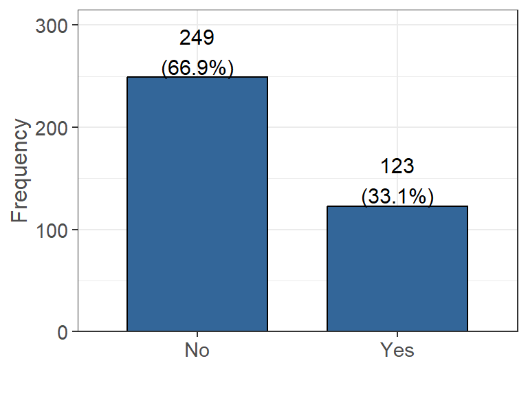
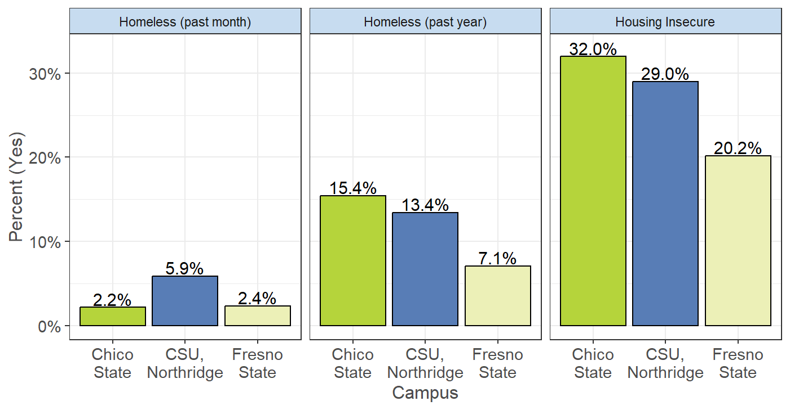

Housing
The following questions were asking in regards to students current and past housing situations. This includes changes due to COVID, if they are living near their college (with most schools being remote at the time of the survey), the type of home they current live in, and hardships that they faced in the past year with housing.
COVID Housing Impact
Has your housing situation changed due to COVID-19? (n=360, 90% of 402 reporting).

Figure 4.1: Impact of COVID on Housing
There are 240 people that participated in the survey that claim their housing has not changed due to the impacts of COVID. There also are 120 people that say their housing situation did change due to the impacts of COVID.
Living Near College
Are you currently living in the city/area in which you are enrolled in college? (n=375, 93% of 402 reporting).

Figure 4.2: Living Near Enrolled College
There are 160 people that participated in the survey that do not currently live in the city/area of their enrolled college. There also are 215 people that say they do live in the city/area of their enrolled college. This high “No” value could likely be due to many campuses being remote and students choosing to live at home or in an area with a lower cost of living.
Current Housing Situation
Which best describes your current housing situation?| Current Housing Situation | Yes (%) |
|---|---|
| I live with parents or other relatives, not paying rent with my own money | 123/365 (33.7%) |
| I rent an apartment or house with roommates | 84/365 (23.0%) |
| I live with parents or other relatives, paying rent with my own money | 78/365 (21.4%) |
| I rent an apartment or house without roommates | 42/365 (11.5%) |
| I own my own home | 10/365 (2.7%) |
| I am temporarily living with friends or relatives, without permanent housing (couch surfing) | 9/365 (2.5%) |
| I live in university housing or residence halls | 9/365 (2.5%) |
| Other | 5/365 (1.4%) |
| I live in transitional housing or a halfway home | 2/365 (0.5%) |
| I am currently living at an outdoor location, abandoned building, car, or other area not meant for regular housing, without permanent housing | 2/365 (0.5%) |
| I live in a sorority or fraternity house | 1/365 (0.3%) |
In the past 12 months…
The following were asked as a series of Yes/No questions to help better understand the living situations of participating students.| Yes (%) | |
|---|---|
| Have you been unable to pay or underpaid a utility bill (n = 345)? | 112 (32.5%) |
| Was there a rent or mortgage increase that made it difficult to pay (n = 335)? | 111 (33.1%) |
| Have you ever been late paying rent or mortgage (n = 347)? | 90 (25.9%) |
| Have you been unable to pay or underpaid your rent or mortgage (n = 328)? | 86 (26.2%) |
| Have you lived with others beyond the expected capacity of your house or apartment (n = 346)? | 71 (20.5%) |
| Have you had to stay in a hostile housing environment or abusive relationship because you had no other place to live (n = 348)? | 31 (8.9%) |
| Have you been asked to leave your home by someone you lived with (n = 362)? | 21 (5.8%) |
| Have you been evicted (n = 368)? | 3 (0.8%) |
The following were asked as frequency questions to help better understand the living situations of participating students.
 Figure 4.3: Unsure of Sleeping and Times Moved
Figure 4.3: Unsure of Sleeping and Times Moved
Over the past 12 months, the majority of people were never unsure of where they would be sleeping (299 people ) or have not moved housing (228 people). For uncertainty in where they would be sleeping, the remaining responses were mostly evenly distributed over the other options. For number of times that a person has moved, 95 people have claimed they moved once in the last 12 months and 31 people have moved twice. Only a small minority have moved 3 or more times in the last 12 months.
Sleeping Places
In the last 30 days, or in the past 12 months, have you slept in any of the following places?
Note: students were only allowed to chose either “last 30 days” or “past 12 months”, so students who selected past 12 months are interpreted as “over 30 days but less than 1 year”.
Stable
| Last 30 days | Last 12 months | |
|---|---|---|
| In a rented or owned house, mobile home, or apartment with my family (parent, guardian, relative or caretaker) | 77/370 (20.8%) | 130/370 (35.1%) |
| In a rented or owned house, mobile home, or apartment (alone or with roommates or friends) | 56/370 (15.1%) | 113/370 (30.5%) |
| Campus or University Housing | 7/370 (1.9%) | 21/370 (5.7%) |
| Sorority/Fraternity house | 0/370 (0.0%) | 3/370 (0.8%) |
Unstable
| Last 30 days | Last 12 months | |
|---|---|---|
| Temporarily staying with a relative, friend or couch surfing until I find other housing | 8/370 (2.2%) | 22/370 (5.9%) |
| In a car, truck, van, RV or camper | 6/370 (1.6%) | 9/370 (2.4%) |
| Temporarily at a hotel or motel without a permanent home to return to (not on vacation or business travel) | 2/370 (0.5%) | 6/370 (1.6%) |
| In a closed area/space with a roof not meant for human habitation such as an abandoned building, garage, tent, etc. | 0/370 (0.0%) | 4/370 (1.1%) |
| In a transitional housing or independent living program | 1/370 (0.3%) | 3/370 (0.8%) |
| Outdoor location such as street, sidewalk, alley, park, etc. | 1/370 (0.3%) | 3/370 (0.8%) |
| At a shelter | 1/370 (0.3%) | 2/370 (0.5%) |
| At a group home such as halfway house or residential program for mental health or substance abuse | 0/370 (0.0%) | 1/370 (0.3%) |
Unstable Housing
In the past 12 months, if you have experienced unstable housing, what was the most common reason? (n=116, 29% of 402 reporting). Figure 4.4: Unstable Housing Identification
It seems that of the people who experienced unstable housing, the most common cause was not having enough money to cover housing expenses (54 people). The next most common was cause was from issues with roommates, both having conflicts (18 people) and them being unable/unwilling to pay living expenses (17 people).
Housing Insecure & Homeless
- Students with at least 3 housing insecurity indicators present are housing insecure, they are not otherwise (n=283, 70% of 402 reporting).
- Students with at least 1 homelessness insecurity indicator present are considered to have experience homelessness at date of survey (n=370, 92% of 402 reporting).
| Unstable Housing Type | Yes (%) |
|---|---|
| Housing Insecure | 21.2% |
| Homeless (year) | 9.5% |
| Homeless (month) | 3.5% |
Looking at the above table we can see that the majority of students are not considered to be housing insecure (223 students, 78.8%), while the remaining students could be classified as housing insecure based on their indicators (60 students, 21.2%).
Looking at the table above, we can see the majority of student did not experience homelessness in either the past month (357 students, 96.5%) or year (335 students, 90.5%). However, we can see around 3x more students did experience homelessness during the past year (35 students, 9.5%) compared to during the past month (13 students, 3.5%).
üè´ üìä Campus Breakdown
Click here for campus breakdown of unstable housing.
 Figure 4.5: Unstable Housing by Campus
From the above figure, and for students who responded to the questions used for determining housing insecurity, we can see that the majority have not experienced homelessness over the past month. However, looking at experiencing homelessness over the past year, we can see a large increase for Chico and around a 2x increase for both Fresno and Northridge. For students who are considered to be housing insecure, we can see around a quarter of the students at Chico and Northridge are identified to have experienced this, with Fresno being a bit lower on average.